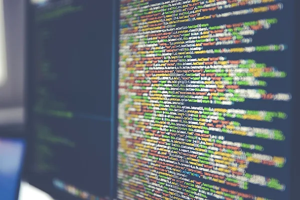
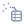
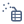
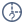

De … største af temaets … selskaberTemaets … selskaber
Tryk på et selskab for at se mere om det.
Vis alle … selskaber i temaet
Andele i PMINDI, den udgave af fonden, der udbetaler udbytte, pr. … (fondens data).


Et af de … temaer i NewDeal Invest
Hvilken opgave er kunden afhængig af at få løst?
Et login, en stemmeassistent og et analyseværktøj løser forskellige opgaver. Se, hvilken opgave hvert selskab tager ansvar for, hvem der bruger løsningen, og hvordan den hænger sammen med resten af teknologien.

… %
af PMINDI er placeret i temaet Software & AI.
Andele i PMINDI, den udgave af fonden, der udbetaler udbytte, pr. … (fondens data).
De … temaer efter størrelse. Software er nr. ….
Det har vi skrevet
Ordret uddrag af NewDeal Invests egne ugebreve og indlæg om temaet, med dato og link til hele teksten. Det er ikke en anbefaling.
Læs hele teksten på bloggen (åbner i nyt vindue)»Mange SaaS-løsninger afregnes per bruger. Når AI øger produktiviteten hos kunderne, reduceres behovet for medarbejdere – og dermed også antallet af licenser. Det skaber strukturelt pres på omsætningsvæksten.«
Temaet
Temaets selskaber gør fem forskellige ting for den, der bruger programmet. Prikkerne tæller selskaber. Bjælken viser andelen af fonden.
 Når du logger ind på arbejdet, tjekker et program, at det er dig.
Når du logger ind på arbejdet, tjekker et program, at det er dig.
Fondens navn for gruppen: Sikkerhed
Sikkerhedssoftware holder øje med trafikken, stopper mistænkelige forsøg og styrer, hvem der må se hvad.
Tryk på et selskab for at se, hvad det laver.
 Når du taler til bilen eller til en kundeservice, kan det være et program, der lytter.
Når du taler til bilen eller til en kundeservice, kan det være et program, der lytter.
Fondens navn for gruppen: AI-applikationer og træningsdata
En AI lærer af eksempler. Her er et selskab, der laver stemme-AI, og et, der hjælper andre med at træne og afprøve deres AI.
årsrapport 2025 (åbner i nyt vindue)).
Tryk på et selskab for at se, hvad det laver.
Når nogen laver en hjemmeside, et spil eller designet til en app, bruger de et værktøj.
Fondens navn for gruppen: Udviklerværktøjer og web
Værktøjer til at lave hjemmesider, spil i 3D og design. I designværktøjet kan flere arbejde i den samme fil på samme tid.
Tryk på et selskab for at se, hvad det laver.


Når en vognmand vil vide, hvor lastbilerne er, samler et program data fra dem.Fondens navn for gruppen: Data og analyse
En virksomhed har data i mange systemer. Dataplatforme samler dem ét sted, så medarbejdere og AI kan bruge dem.
Tryk på et selskab for at se, hvad det laver.
Når en ansat skal på forretningsrejse og bagefter afregne udgifterne, kan det ske i ét program.
Fondens navn for gruppen: Erhvervsapplikationer
Én platform, hvor virksomheder booker rejser og styrer de ansattes udgifter.
Tryk på et selskab for at se, hvad det laver.
CrowdStrike og Palo Alto Networks laver sikkerhedsprogrammer, der beskytter virksomheders it. Snowflake er en datasky, hvor virksomheder samler og deler deres data.


Hvor meget af selskabernes omsætning der kommer fra AI, kan ikke opgøres. Flere selskaber skriver selv, at deres produkter er drevet af AI, men det er deres egen betegnelse og ikke en målt andel af omsætningen.Naboerne
Software findes også hos selskaber, der tjener deres penge på noget andet. Upstart har fx bygget sine egne AI-modeller, men er en markedsplads for lån og står derfor under Fintech. Oracle, Microsoft og Cisco står under Datacentre.
Hovedtemaet er det tema, selskabet tæller med i.
Set udefra
Videoer og opslag er forklaringer og nyheder udefra. De er ikke fondens holdning.
Se efter: Hvilken opgave løser produktet for brugeren, og hvad er dokumenteret i indslaget?
Se efter: Hvilken opgave løser produktet for brugeren, og hvad er dokumenteret i indslaget?
Se efter: Hvilken opgave løser produktet for brugeren, og hvad er dokumenteret i indslaget?
Unity for Games @unitygames · på engelsk
Kort fortalt Kontoen Unity for Games oplyser, at Claude Code, Anthropics AI-program, der skriver kode, nu kan styre Unitys program til at bygge spil direkte. Det sker via en officiel tilføjelse fra Unity.
Hvad skal du lægge mærke til? Læs opslaget sammen med afsnittet om bygger det, du ser på skærmen. Hvilken opgave løser produktet for brugeren, og hvad er dokumenteret i indslaget?
The Information @theinformation · på engelsk
Kort fortalt Ifølge The Information har hackere gjort Claude og Grok til et netværk af AI-agenter, altså programmer, der selv udfører opgaver. Mediet skriver, at oplysningen stammer fra en undersøgelse fra cybersikkerhedsforskere.
Hvad skal du lægge mærke til? Læs opslaget sammen med afsnittet om holder uvedkommende ude. Hvilken opgave løser produktet for brugeren, og hvad er dokumenteret i indslaget?
Social Capital @socialcapital · på engelskDelt af Mads Christiansen fra teamet bag NewDeal Invest · delingen på X (åbner i nyt vindue)
Kort fortalt Kontoen Social Capital oplyser, at AI-modellerne fra det kinesiske selskab DeepSeek i sidste uge af september blev brugt mere end modellerne fra OpenAI, Google, Anthropic og xAI tilsammen på OpenRouter, en tjeneste, hvor man kan bruge mange AI-modeller ét sted. Brugen er målt i tokens, de små tekststykker en AI-model læser og skriver.
Hvad skal du lægge mærke til? Læs opslaget sammen med afsnittet om får maskinen til at forstå. Hvilken opgave løser produktet for brugeren, og hvad er dokumenteret i indslaget?
Nyhed om software
MongoDB @MongoDB · på engelsk
Kort fortalt MongoDB oplyser, at databasetjenesten Atlas nu kan bruges som datalag, når AI-agenter skriver kode i Grok Build, et udviklingsværktøj fra SpaceX Super Intelligence (SpaceXSI). Ifølge MongoDB kan agenterne oprette databaseklynger, indlæse data og sætte søgning efter indhold med samme betydning op ud fra almindelig tekst, med indbygget godkendelse fra et menneske.
Hvad skal du lægge mærke til? Læs opslaget sammen med afsnittet om nyhed om software. Hvilken opgave løser produktet for brugeren, og hvad er dokumenteret i indslaget?
Opslagene er udvalgt af teamet bag NewDeal Invest. Afsenderne og de nævnte selskaber står ikke bag denne side, og opslagene er ikke fondens vurdering.
Tryk på et selskab for at se mere om det.
Andele i PMINDI, den udgave af fonden, der udbetaler udbytte, pr. … (fondens data).
Udvalgte offentlige opslag om selskaberne i temaet. Opslagene er andres og ikke NewDeal Invests holdning.
Henter opslag …
Afsnittet beskriver temaet og vurderer det ikke. Kilden står ved hvert punkt.
VIDEOER OG OPSLAG
X · 2026-10-29
X · 2026-10-29
De øvrige kilder står ved tallene og samlet herunder.
Følg et spørgsmål gennem seks lag, og se hvordan software hænger sammen med datacentre, chips og strøm.
Udforsk de seks lag →